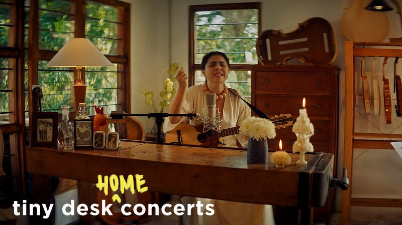
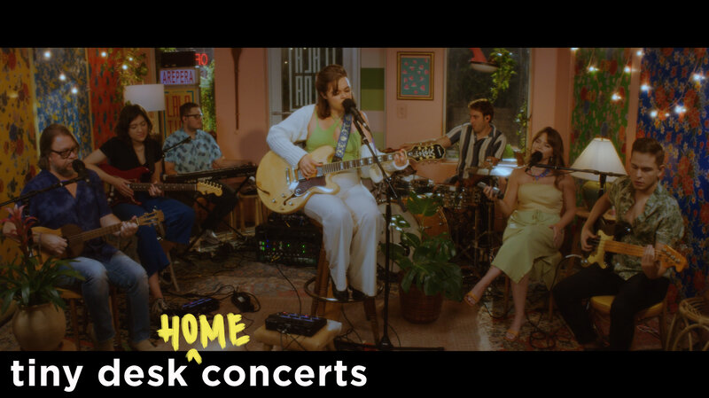
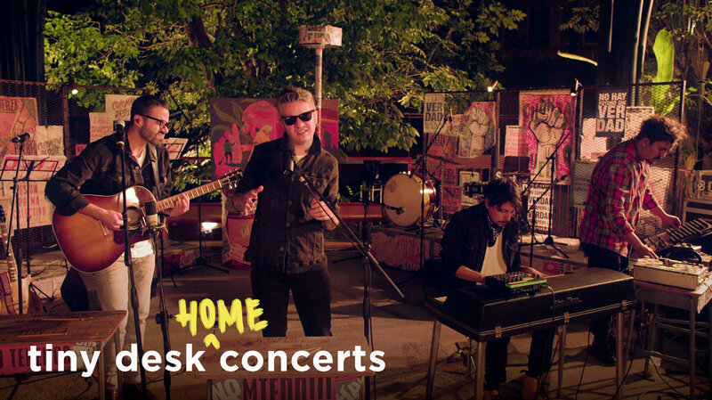
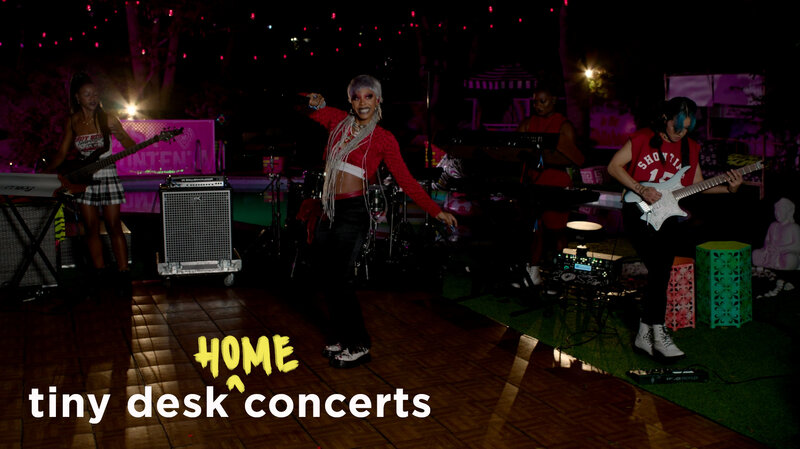

A person wearing a mask walks past posters encouraging census participation in Seattle in April 2020. The coronavirus pandemic has disrupted not only last year's national head count, but also a critical follow-up survey that the U.S. Census Bureau relies on to determine the tally's accuracy. Ted S. Warren/AP hide caption
How many people of color did the 2020 census miss? COVID makes it harder to tell
Horseback riders take a trail ride on Aug. 13 near June Lake, Calif. George Rose/Getty Images hide caption
Relatives and residents pray during a funeral ceremony for victims of a suicide attack at the Gozar-e-Sayed Abad Mosque in Kunduz, northern Afghanistan, on Saturday. The mosque was packed with Shiite Muslim worshippers when an Islamic State suicide bomber attacked during Friday prayers, killing dozens in the latest security challenge to the Taliban as they transition from insurgency to governance. Abdullah Sahil/AP hide caption

People take part in the Women's March ATX rally, Oct. 2, at the Texas State Capitol in Austin. The march was a response to a Texas law that bans most abortions. Stephen Spillman/AP hide caption
More NPR content after sponsor message
Pick Your NPR Station
Looking for your favorite local station's stories or live stream?
Members of the Full Circle Everest team pose for a photo on Mount Rainier earlier this year. Next year, group members hope to become the first all-Black team to reach the top of Mount Everest. Philip Henderson hide caption
Orphaned mountain gorilla Ndakasi lies in the arms of her caregiver Andre Bauma on Sept. 21, shortly before her death. Brent Stirton/Getty Images hide caption

Joe Jackson is pictured when he played for the Cleveland Indians. Sporting News Archive/Sporting News via Getty Images hide caption
A friend's invitation to fly in for a visit at their vacation cabin came with a request for a COVID precaution that seemed ... not very helpful. Michael Fox/EyeEm /Getty Images hide caption
WATCH
MORE VIDEOS- 00:12:07
Sech: Tiny Desk (Home) Concert
- 00:14:16
Eme Alfonso: Tiny Desk (Home) Concert
- 00:20:23 
Silvana Estrada: Tiny Desk (Home) Concert
- 00:13:16 
maye: Tiny Desk (Home) Concert
- 00:15:49 
Diamante Eléctrico: Tiny Desk (Home) Concert
- 00:15:20
J Balvin: Tiny Desk (Home) Concert
- 00:18:29
Royce 5Ə": Tiny Desk (Home) Concert
- 00:15:26
Pastor T.L. Barrett & The Royal Voices Of Life: Tiny Desk (Home) Concert
- 00:19:07
Yebba: Tiny Desk (Home) Concert
- 00:13:37 
Rico Nasty: Tiny Desk (Home) Concert